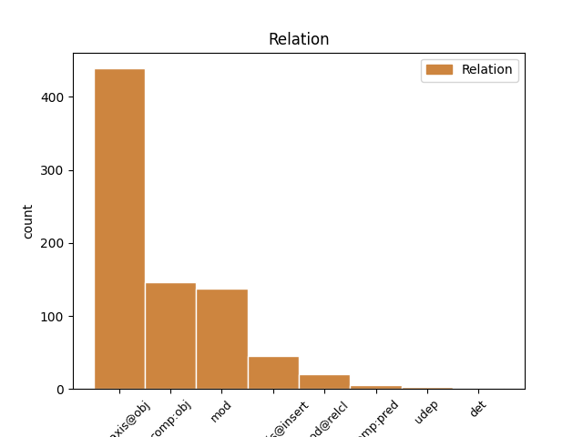
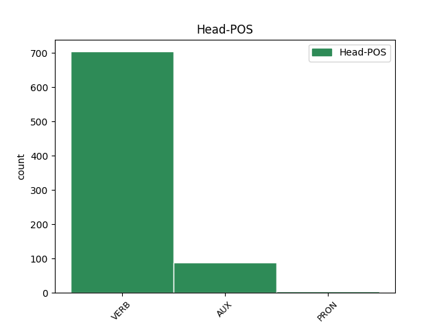
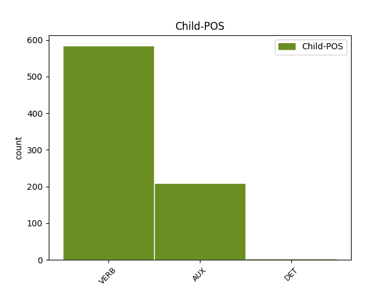

Distribution of features within this leaf



Agreement Rules sorted by frequency.
- When the dependent token is the parataxis(parataxis@obj) of the head token, and the dependent token is VERB.
1 - _ _ _ _ 0 _ _ _
2 Twoja _ _ _ _ 0 _ _ _
3 głowa _ _ _ _ 0 _ _ _
4 wygląda wyglądać VERB fin:sg:ter:imperf Aspect=Imp|Mood=Ind|Number=Sing|Person=3|Tense=Pres|VerbForm=Fin|Voice=Act 7 parataxis@obj _ _
5 strasznie _ _ _ _ 0 _ _ _
6 - _ _ _ _ 0 _ _ _
7 stwierdza stwierdzać VERB fin:sg:ter:imperf Aspect=Imp|Mood=Ind|Number=Sing|Person=3|Tense=Pres|VerbForm=Fin|Voice=Act 0 _ _ _
8 . _ _ _ _ 0 _ _ _
1 Obchodzę obchodzić VERB fin:sg:pri:imperf Aspect=Imp|Mood=Ind|Number=Sing|Person=1|Tense=Pres|VerbForm=Fin|Voice=Act 0 _ _ _
2 to _ _ _ _ 0 _ _ _
3 święto _ _ _ _ 0 _ _ _
4 od _ _ _ _ 0 _ _ _
5 kiedy _ _ _ _ 0 _ _ _
6 pamiętam pamiętać VERB fin:sg:pri:imperf Aspect=Imp|Mood=Ind|Number=Sing|Person=1|Tense=Pres|VerbForm=Fin|Voice=Act 1 mod _ SpaceAfter=No
7 , _ _ _ _ 0 _ _ _
8 tak _ _ _ _ 0 _ _ _
9 jak _ _ _ _ 0 _ _ _
10 moja _ _ _ _ 0 _ _ _
11 matka _ _ _ _ 0 _ _ _
12 i _ _ _ _ 0 _ _ _
13 babka _ _ _ _ 0 _ _ _
14 . _ _ _ _ 0 _ _ _
1 W _ _ _ _ 0 _ _ _
2 istocie _ _ _ _ 0 _ _ _
3 , _ _ _ _ 0 _ _ _
4 osiągnięcie _ _ _ _ 0 _ _ _
5 któregokolwiek _ _ _ _ 0 _ _ _
6 z _ _ _ _ 0 _ _ _
7 pięciu _ _ _ _ 0 _ _ _
8 głównych _ _ _ _ 0 _ _ _
9 celów _ _ _ _ 0 _ _ _
10 analizowanych _ _ _ _ 0 _ _ _
11 w _ _ _ _ 0 _ _ _
12 raporcie _ _ _ _ 0 _ _ _
13 będzie być AUX bedzie:sg:ter:imperf Aspect=Imp|Mood=Ind|Number=Sing|Person=3|Tense=Fut|VerbForm=Fin 35 parataxis@obj _ _
14 wymagało _ _ _ _ 0 _ _ _
15 znaczących _ _ _ _ 0 _ _ _
16 starań _ _ _ _ 0 _ _ _
17 politycznych _ _ _ _ 0 _ _ _
18 w _ _ _ _ 0 _ _ _
19 większości _ _ _ _ 0 _ _ _
20 krajów _ _ _ _ 0 _ _ _
21 , _ _ _ _ 0 _ _ _
22 których _ _ _ _ 0 _ _ _
23 łącznych _ _ _ _ 0 _ _ _
24 kosztów _ _ _ _ 0 _ _ _
25 nie _ _ _ _ 0 _ _ _
26 można _ _ _ _ 0 _ _ _
27 było _ _ _ _ 0 _ _ _
28 w _ _ _ _ 0 _ _ _
29 całości _ _ _ _ 0 _ _ _
30 ująć _ _ _ _ 0 _ _ _
31 w _ _ _ _ 0 _ _ _
32 prezentowanych _ _ _ _ 0 _ _ _
33 danych _ _ _ _ 0 _ _ _
34 - _ _ _ _ 0 _ _ _
35 przyznają przyznawać VERB fin:pl:ter:imperf Aspect=Imp|Mood=Ind|Number=Plur|Person=3|Tense=Pres|VerbForm=Fin|Voice=Act 0 _ _ _
36 autorzy _ _ _ _ 0 _ _ _
37 . _ _ _ _ 0 _ _ _
1 Nie _ _ _ _ 0 _ _ _
2 wiem wiedzieć VERB fin:sg:pri:imperf Aspect=Imp|Mood=Ind|Number=Sing|Person=1|Tense=Pres|VerbForm=Fin|Voice=Act 0 _ _ _
3 co _ _ _ _ 0 _ _ _
4 piję pić VERB fin:sg:pri:imperf Aspect=Imp|Mood=Ind|Number=Sing|Person=1|Tense=Pres|VerbForm=Fin|Voice=Act 2 comp:obj _ SpaceAfter=No
5 , _ _ _ _ 0 _ _ _
6 ale _ _ _ _ 0 _ _ _
7 jeśli _ _ _ _ 0 _ _ _
8 to _ _ _ _ 0 _ _ _
9 jest _ _ _ _ 0 _ _ _
10 miłość _ _ _ _ 0 _ _ _
11 . _ _ _ _ 0 _ _ _
12 . _ _ _ _ 0 _ _ _
13 . _ _ _ _ 0 _ _ _
14 dolej _ _ _ _ 0 _ _ _
15 mi _ _ _ _ 0 _ _ _
16 jeszcze _ _ _ _ 0 _ _ _
17 . _ _ _ _ 0 _ _ _
1 - _ _ _ _ 0 _ _ _
2 Nie _ _ _ _ 0 _ _ _
3 wiem wiedzieć VERB fin:sg:pri:imperf Aspect=Imp|Mood=Ind|Number=Sing|Person=1|Tense=Pres|VerbForm=Fin|Voice=Act 0 _ _ _
4 , _ _ _ _ 0 _ _ _
5 co _ _ _ _ 0 _ _ _
6 zrobił _ _ _ _ 0 _ _ _
7 em być AUX aglt:sg:pri:imperf:wok Aspect=Imp|Clitic=Yes|Number=Sing|Person=1|Variant=Long 3 comp:obj _ _
8 . _ _ _ _ 0 _ _ _
1 Poparli _ _ _ _ 0 _ _ _
2 śmy być AUX aglt:pl:pri:imperf:nwok Aspect=Imp|Clitic=Yes|Number=Plur|Person=1|Variant=Short 0 _ _ _
3 tak _ _ _ _ 0 _ _ _
4 zwane _ _ _ _ 0 _ _ _
5 akty _ _ _ _ 0 _ _ _
6 delegowane _ _ _ _ 0 _ _ _
7 na _ _ _ _ 0 _ _ _
8 mocy _ _ _ _ 0 _ _ _
9 przepisów _ _ _ _ 0 _ _ _
10 mających _ _ _ _ 0 _ _ _
11 swoje _ _ _ _ 0 _ _ _
12 źródło _ _ _ _ 0 _ _ _
13 w _ _ _ _ 0 _ _ _
14 traktacie _ _ _ _ 0 _ _ _
15 lizbońskim _ _ _ _ 0 _ _ _
16 . _ _ _ _ 0 _ _ _
17 ( _ _ _ _ 0 _ _ _
18 Już _ _ _ _ 0 _ _ _
19 kończę kończyć VERB fin:sg:pri:imperf Aspect=Imp|Mood=Ind|Number=Sing|Person=1|Tense=Pres|VerbForm=Fin|Voice=Act 2 parataxis@insert _ SpaceAfter=No
20 ) _ _ _ _ 0 _ _ _
21 . _ _ _ _ 0 _ _ _
1 . _ _ _ _ 0 _ _ _
2 . _ _ _ _ 0 _ _ _
3 . _ _ _ _ 0 _ _ _
4 co _ _ _ _ 0 _ _ _
5 myślał _ _ _ _ 0 _ _ _
6 eś być AUX aglt:sg:sec:imperf:wok Aspect=Imp|Clitic=Yes|Number=Sing|Person=2|Variant=Long 0 _ _ _
7 jak _ _ _ _ 0 _ _ _
8 sobie _ _ _ _ 0 _ _ _
9 walił _ _ _ _ 0 _ _ _
10 eś być AUX aglt:sg:sec:imperf:wok Aspect=Imp|Clitic=Yes|Number=Sing|Person=2|Variant=Long 6 mod _ _
11 . _ _ _ _ 0 _ _ _
1 Chodzi chodzić VERB fin:sg:ter:imperf Aspect=Imp|Mood=Ind|Number=Sing|Person=3|Tense=Pres|VerbForm=Fin|Voice=Act 0 _ _ _
2 tu _ _ _ _ 0 _ _ _
3 o _ _ _ _ 0 _ _ _
4 obszary _ _ _ _ 0 _ _ _
5 polityki _ _ _ _ 0 _ _ _
6 obejmujące _ _ _ _ 0 _ _ _
7 wsparcie _ _ _ _ 0 _ _ _
8 , _ _ _ _ 0 _ _ _
9 opiekę _ _ _ _ 0 _ _ _
10 i _ _ _ _ 0 _ _ _
11 edukację _ _ _ _ 0 _ _ _
12 , _ _ _ _ 0 _ _ _
13 co _ _ _ _ 0 _ _ _
14 może móc VERB fin:sg:ter:imperf Aspect=Imp|Mood=Ind|Number=Sing|Person=3|Tense=Pres|VerbForm=Fin|Voice=Act 1 mod@relcl _ _
15 wydawać _ _ _ _ 0 _ _ _
16 się _ _ _ _ 0 _ _ _
17 nieco _ _ _ _ 0 _ _ _
18 paradoksalne _ _ _ _ 0 _ _ _
19 w _ _ _ _ 0 _ _ _
20 kontekście _ _ _ _ 0 _ _ _
21 zagadnienia _ _ _ _ 0 _ _ _
22 dotyczącego _ _ _ _ 0 _ _ _
23 w _ _ _ _ 0 _ _ _
24 rzeczywistości _ _ _ _ 0 _ _ _
25 intymności _ _ _ _ 0 _ _ _
26 par _ _ _ _ 0 _ _ _
27 i _ _ _ _ 0 _ _ _
28 rodziny _ _ _ _ 0 _ _ _
29 . _ _ _ _ 0 _ _ _
1 Konkurencja _ _ _ _ 0 _ _ _
2 skutkuje skutkować VERB fin:sg:ter:imperf Aspect=Imp|Mood=Ind|Number=Sing|Person=3|Tense=Pres|VerbForm=Fin|Voice=Act 0 _ _ _
3 niższymi _ _ _ _ 0 _ _ _
4 cenami _ _ _ _ 0 _ _ _
5 , _ _ _ _ 0 _ _ _
6 lepszą _ _ _ _ 0 _ _ _
7 jakością _ _ _ _ 0 _ _ _
8 usług _ _ _ _ 0 _ _ _
9 i _ _ _ _ 0 _ _ _
10 większym _ _ _ _ 0 _ _ _
11 wyborem _ _ _ _ 0 _ _ _
12 , _ _ _ _ 0 _ _ _
13 dzięki _ _ _ _ 0 _ _ _
14 czemu _ _ _ _ 0 _ _ _
15 konsumenci _ _ _ _ 0 _ _ _
16 są być AUX fin:pl:ter:imperf Aspect=Imp|Mood=Ind|Number=Plur|Person=3|Tense=Pres|VerbForm=Fin|Voice=Act 2 mod@relcl _ _
17 na _ _ _ _ 0 _ _ _
18 wygranej _ _ _ _ 0 _ _ _
19 pozycji _ _ _ _ 0 _ _ _
20 . _ _ _ _ 0 _ _ _
1 15 _ _ _ _ 0 _ _ _
2 . _ _ _ _ 0 _ _ _
3 Nawet _ _ _ _ 0 _ _ _
4 gdy _ _ _ _ 0 _ _ _
5 nie _ _ _ _ 0 _ _ _
6 jestem być AUX fin:sg:pri:imperf Aspect=Imp|Mood=Ind|Number=Sing|Person=1|Tense=Pres|VerbForm=Fin|Voice=Act 18 comp:pred _ _
7 wystarczająco _ _ _ _ 0 _ _ _
8 przygotowany _ _ _ _ 0 _ _ _
9 do _ _ _ _ 0 _ _ _
10 egzaminu _ _ _ _ 0 _ _ _
11 lub _ _ _ _ 0 _ _ _
12 rozmowy _ _ _ _ 0 _ _ _
13 z _ _ _ _ 0 _ _ _
14 szefem _ _ _ _ 0 _ _ _
15 , _ _ _ _ 0 _ _ _
16 po _ _ _ _ 0 _ _ _
17 prostu _ _ _ _ 0 _ _ _
18 wchodzę wchodzić VERB fin:sg:pri:imperf Aspect=Imp|Mood=Ind|Number=Sing|Person=1|Tense=Pres|VerbForm=Fin|Voice=Act 0 _ _ _
19 i _ _ _ _ 0 _ _ _
20 zdaję _ _ _ _ 0 _ _ _
21 lub _ _ _ _ 0 _ _ _
22 rozmawiam _ _ _ _ 0 _ _ _
23 . _ _ _ _ 0 _ _ _
1 Nowe _ _ _ _ 0 _ _ _
2 samochody _ _ _ _ 0 _ _ _
3 będą _ _ _ _ 0 _ _ _
4 się _ _ _ _ 0 _ _ _
5 cieszyły _ _ _ _ 0 _ _ _
6 chyba _ _ _ _ 0 _ _ _
7 większym _ _ _ _ 0 _ _ _
8 powodzeniem _ _ _ _ 0 _ _ _
9 niż _ _ _ _ 0 _ _ _
10 w _ _ _ _ 0 _ _ _
11 ostatnich _ _ _ _ 0 _ _ _
12 kilkunastu _ _ _ _ 0 _ _ _
13 miesiącach _ _ _ _ 0 _ _ _
14 , _ _ _ _ 0 _ _ _
15 bowiem _ _ _ _ 0 _ _ _
16 w _ _ _ _ 0 _ _ _
17 kwietniu _ _ _ _ 0 _ _ _
18 ( _ _ _ _ 0 _ _ _
19 takie _ _ _ _ 0 _ _ _
20 są być AUX fin:pl:ter:imperf Aspect=Imp|Mood=Ind|Number=Plur|Person=3|Tense=Pres|VerbForm=Fin|Voice=Act 26 det _ _
21 przymiarki _ _ _ _ 0 _ _ _
22 ) _ _ _ _ 0 _ _ _
23 akcyzę _ _ _ _ 0 _ _ _
24 na _ _ _ _ 0 _ _ _
25 auta _ _ _ _ 0 _ _ _
26 zastąpi zastąpić VERB fin:sg:ter:perf Aspect=Perf|Mood=Ind|Number=Sing|Person=3|Tense=Fut|VerbForm=Fin|Voice=Act 0 _ _ _
27 nowy _ _ _ _ 0 _ _ _
28 podatek _ _ _ _ 0 _ _ _
29 samochodowy _ _ _ _ 0 _ _ _
30 , _ _ _ _ 0 _ _ _
31 który _ _ _ _ 0 _ _ _
32 ma _ _ _ _ 0 _ _ _
33 sprawić _ _ _ _ 0 _ _ _
34 , _ _ _ _ 0 _ _ _
35 by _ _ _ _ 0 _ _ _
36 import _ _ _ _ 0 _ _ _
37 starych _ _ _ _ 0 _ _ _
38 i _ _ _ _ 0 _ _ _
39 wysłużonych _ _ _ _ 0 _ _ _
40 pojazdów _ _ _ _ 0 _ _ _
41 z _ _ _ _ 0 _ _ _
42 zagranicy _ _ _ _ 0 _ _ _
43 nie _ _ _ _ 0 _ _ _
44 był _ _ _ _ 0 _ _ _
45 już _ _ _ _ 0 _ _ _
46 tak _ _ _ _ 0 _ _ _
47 opłacalny _ _ _ _ 0 _ _ _
48 . _ _ _ _ 0 _ _ _
1 Niedawno _ _ _ _ 0 _ _ _
2 pisał _ _ _ _ 0 _ _ _
3 em być AUX aglt:sg:pri:imperf:wok Aspect=Imp|Clitic=Yes|Number=Sing|Person=1|Variant=Long 0 _ _ _
4 , _ _ _ _ 0 _ _ _
5 że _ _ _ _ 0 _ _ _
6 dziennik _ _ _ _ 0 _ _ _
7 telewizyjny _ _ _ _ 0 _ _ _
8 podał _ _ _ _ 0 _ _ _
9 - _ _ _ _ 0 _ _ _
10 " _ _ _ _ 0 _ _ _
11 Prezydent _ _ _ _ 0 _ _ _
12 Bush _ _ _ _ 0 _ _ _
13 zażądał _ _ _ _ 0 _ _ _
14 od _ _ _ _ 0 _ _ _
15 Chin _ _ _ _ 0 _ _ _
16 zwrotu _ _ _ _ 0 _ _ _
17 szpiegowskiego _ _ _ _ 0 _ _ _
18 samolotu _ _ _ _ 0 _ _ _
19 " _ _ _ _ 0 _ _ _
20 ( _ _ _ _ 0 _ _ _
21 nie _ _ _ _ 0 _ _ _
22 jestem być AUX fin:sg:pri:imperf Aspect=Imp|Mood=Ind|Number=Sing|Person=1|Tense=Pres|VerbForm=Fin|Voice=Act 3 parataxis@insert _ _
23 pewien _ _ _ _ 0 _ _ _
24 , _ _ _ _ 0 _ _ _
25 czy _ _ _ _ 0 _ _ _
26 w _ _ _ _ 0 _ _ _
27 oryginale _ _ _ _ 0 _ _ _
28 wystąpił _ _ _ _ 0 _ _ _
29 szpiegowski _ _ _ _ 0 _ _ _
30 wątek _ _ _ _ 0 _ _ _
31 . _ _ _ _ 0 _ _ _
32 . _ _ _ _ 0 _ _ _
33 . _ _ _ _ 0 _ _ _
1 Coś _ _ _ _ 0 _ _ _
2 , _ _ _ _ 0 _ _ _
3 co _ _ _ _ 0 _ _ _
4 może móc VERB fin:sg:ter:imperf Aspect=Imp|Mood=Ind|Number=Sing|Person=3|Tense=Pres|VerbForm=Fin|Voice=Act 0 _ _ _
5 kopać _ _ _ _ 0 _ _ _
6 , _ _ _ _ 0 _ _ _
7 kiedy _ _ _ _ 0 _ _ _
8 jest być AUX fin:sg:ter:imperf Aspect=Imp|Mood=Ind|Number=Sing|Person=3|Tense=Pres|VerbForm=Fin|Voice=Act 4 udep _ _
9 zły _ _ _ _ 0 _ _ _
10 . _ _ _ _ 0 _ _ _
Disagree Examples:
1 Zapytam zapytać VERB fin:sg:pri:perf Aspect=Perf|Mood=Ind|Number=Sing|Person=1|Tense=Fut|VerbForm=Fin|Voice=Act 0 _ _ _
2 , _ _ _ _ 0 _ _ _
3 jakiej _ _ _ _ 0 _ _ _
4 pomocy _ _ _ _ 0 _ _ _
5 oczekuje oczekiwać VERB fin:sg:ter:imperf Aspect=Imp|Mood=Ind|Number=Sing|Person=3|Tense=Pres|VerbForm=Fin|Voice=Act 1 comp:obj _ SpaceAfter=No
6 . _ _ _ _ 0 _ _ _
1 „ _ _ _ _ 0 _ _ _
2 Wiem wiedzieć VERB fin:sg:pri:imperf Aspect=Imp|Mood=Ind|Number=Sing|Person=1|Tense=Pres|VerbForm=Fin|Voice=Act 0 _ _ _
3 , _ _ _ _ 0 _ _ _
4 co _ _ _ _ 0 _ _ _
5 pan _ _ _ _ 0 _ _ _
6 czuje czuć VERB fin:sg:ter:imperf Aspect=Imp|Mood=Ind|Number=Sing|Person=3|Tense=Pres|VerbForm=Fin|Voice=Act 2 comp:obj _ SpaceAfter=No
7 . _ _ _ _ 0 _ _ _
8 . _ _ _ _ 0 _ _ _
9 . _ _ _ _ 0 _ _ _
10 ” _ _ _ _ 0 _ _ _
1 - _ _ _ _ 0 _ _ _
2 A _ _ _ _ 0 _ _ _
3 wiesz wiedzieć VERB fin:sg:sec:imperf Aspect=Imp|Mood=Ind|Number=Sing|Person=2|Tense=Pres|VerbForm=Fin|Voice=Act 0 _ _ _
4 , _ _ _ _ 0 _ _ _
5 czym _ _ _ _ 0 _ _ _
6 zajmuje zajmować VERB fin:sg:ter:imperf Aspect=Imp|Mood=Ind|Number=Sing|Person=3|Tense=Pres|VerbForm=Fin|Voice=Act 3 comp:obj _ _
7 się _ _ _ _ 0 _ _ _
8 tutaj _ _ _ _ 0 _ _ _
9 ? _ _ _ _ 0 _ _ _
1 Gdy _ _ _ _ 0 _ _ _
2 Cahirowi _ _ _ _ 0 _ _ _
3 czupryna _ _ _ _ 0 _ _ _
4 nieco _ _ _ _ 0 _ _ _
5 mocniej _ _ _ _ 0 _ _ _
6 przyschnie przyschnąć VERB fin:sg:ter:perf Aspect=Perf|Mood=Ind|Number=Sing|Person=3|Tense=Fut|VerbForm=Fin|Voice=Act 10 mod _ _
7 do _ _ _ _ 0 _ _ _
8 czerepu _ _ _ _ 0 _ _ _
9 , _ _ _ _ 0 _ _ _
10 powędrujemy powędrować VERB fin:pl:pri:perf Aspect=Perf|Mood=Ind|Number=Plur|Person=1|Tense=Fut|VerbForm=Fin|Voice=Act 0 _ _ _
11 ku _ _ _ _ 0 _ _ _
12 Toussaint _ _ _ _ 0 _ _ _
13 . _ _ _ _ 0 _ _ _
1 Kiedy _ _ _ _ 0 _ _ _
2 miała _ _ _ _ 0 _ _ _
3 m być AUX aglt:sg:pri:imperf:nwok Aspect=Imp|Clitic=Yes|Number=Sing|Person=1|Variant=Short 7 mod _ _
4 pięć _ _ _ _ 0 _ _ _
5 lat _ _ _ _ 0 _ _ _
6 , _ _ _ _ 0 _ _ _
7 posłano posłać VERB imps:perf Aspect=Perf|Mood=Ind|Person=0|Tense=Past|VerbForm=Fin|Voice=Act 0 _ _ _
8 mnie _ _ _ _ 0 _ _ _
9 do _ _ _ _ 0 _ _ _
10 szkoły _ _ _ _ 0 _ _ _
11 . _ _ _ _ 0 _ _ _